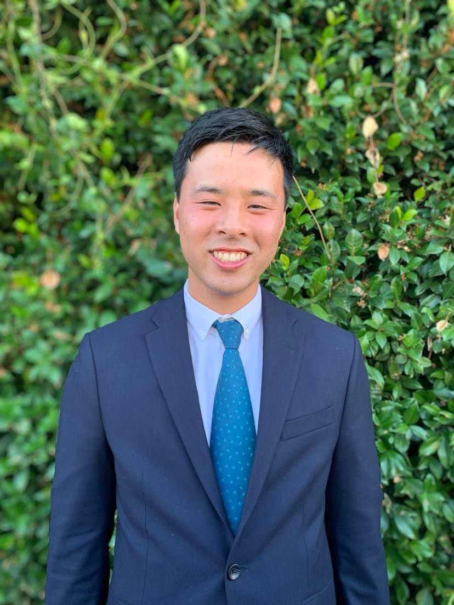
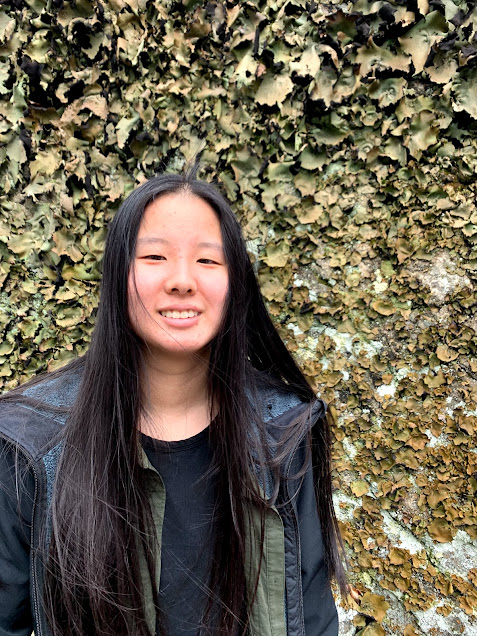
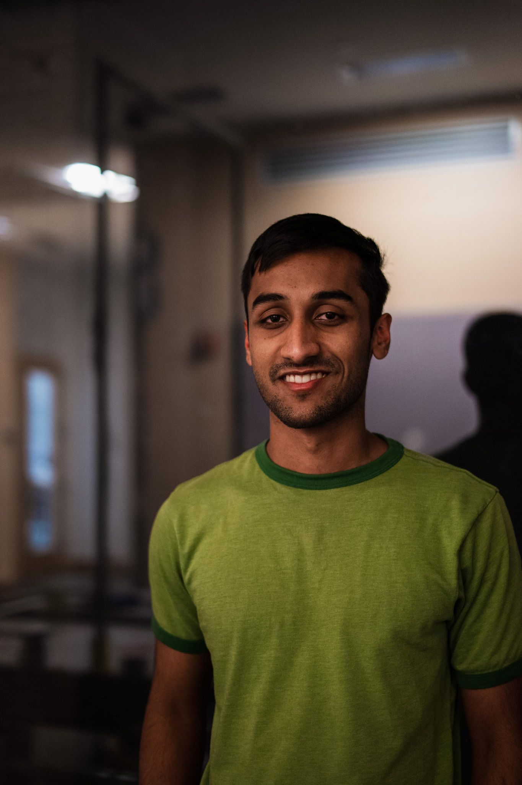

We are a group of five engineering students at Olin College. We came together as a team for this class because we believed we had skill sets that were complementary and would make for a well-balanced team. Collectively, we were drawn to projects that had significant mechanical, software, and electrical complexity to fulfill the learning goals of each team member. We also wanted to create something that had a strong “wow factor,” looked cool, and/or involved complex physical motions. This led to us exploring ideas at the intersection of art and robotics, as well as the intersection of biomechanics and robotics. After extensive group brainstorming, we settled on what became our final project: creating an air hockey robot.

Brent
Brent is a Mechanical Engineering major. His life motto is “Ball is Life” so he is confused by the shape of the puck. He now sees that the puck is indistinguishable to a ball in a 2D view. By working on the camera mount, he can continue living his life motto as it is impossible to see if the project is using a ball or a puck. Brent’s main goals were to create a well organized CAD assembly, create an aesthetically pleasing final product, and apply math knowledge to the project. His goals were achieved by dividing and organizing subsystems in the CAD (1-axis, 2-axis, camera mount). Brent also assisted in picking the motors by calculating the required torque and acceleration that the steppers needed to fulfill the MVP.
Isabel
Isabel is an electrical and computer engineering major. She is pretty competitive and likes winning, so designing a robot that she wanted to lose against was pretty difficult. She went into the project looking to get practice with integration and working with a larger codebase. Isabel helped with project management and organization, prototyped and testing Arduino code, and took point on the website.

Linda
Linda is a Mechanical Engineering major. She loves climbing, hiking, and all things outdoors. By creating a robot to keep her friends busy, she will have more time to become one with nature. Her main goal was to get better at designing and CADing components. She found this project to be valuable to her learning because she got more experience in designing components that actually needed to work in real life contexts.

Rohil
Rohil is a mechanical engineering major and our resident abrasives expert. He spent many hours filing and sanding our parts when they didn’t fit together and also made ample use of one of the most prized possessions in mechanical assembly: WD-40. Rohil’s primary learning goals for this project were to get practice with integration/testing and gain a better understanding of electromechanical components (e.g. motors, sensors, etc). He thinks the work he did on this project satisfied his first learning goal, as he spent time iterating between design and fabrication as the team tried integrating components and learned what worked and didn’t work. He also got practice making adjustments on the fly during assembly, which he was happy about. He got less experience on the electromechanical side of things than he would have liked to, with relatively limited work on the motors, but he did learn a bit about the break beam sensors when designing the mechanical parts that would interface with them and by soldering the sensors to their boards.
Wesley
Wesley is a Robotics Engineering major. When he was in middle school, Wesley got hit in the head by a flying air hockey puck at a Pizza Hut arcade. This shaped his life as he vowed to enact revenge on the game that hurt him as a child. Wesley’s primary learning goal was to practice writing quality software and designing a robust electrical system. These learning goals were achieved throughout this project through good coding practices (such as good git hygiene and code linting) and by designing multiple iterations of the electrical system through reviews with CAs.